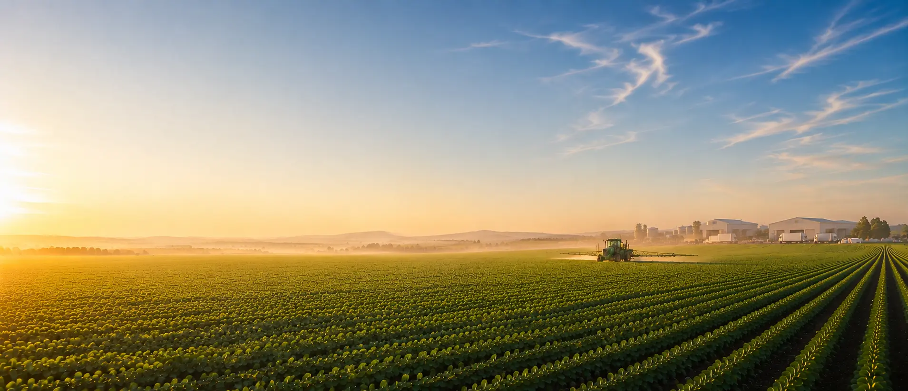
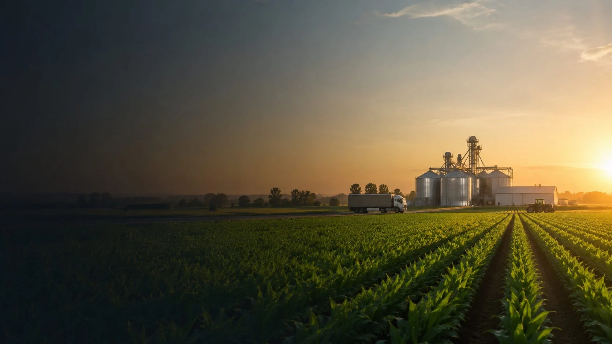
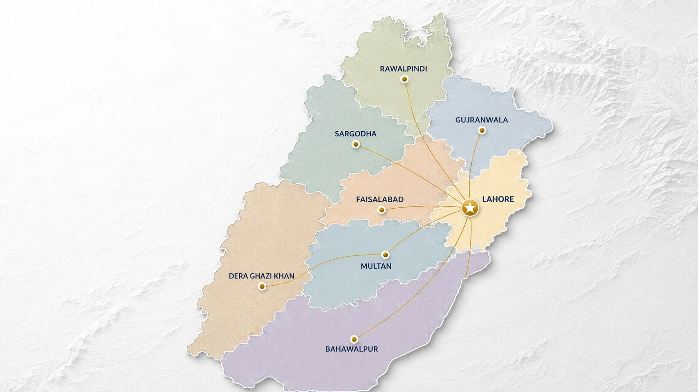

Agricultural Inputs Distribution
We ensure the timely availability of quality agricultural inputs through an efficient distribution network serving dealers and agricultural markets across Punjab.
AR Traders
Built on 17 years of fertilizer industry leadership, AR Traders supplies agricultural inputs across Punjab through a trusted network of dealers and branch offices — reliably, at scale, season after season.

17+ Years
Industry Experience
2,500 MT
Monthly Distribution
PKR 2.3 Billion
Annual Business
Punjab
Market Focus

About AR Traders
Agriculture is more than an industry—it is the foundation of food security, economic growth, and sustainable development. At AR Traders, we believe that strengthening agriculture begins with building trusted relationships, delivering reliable agricultural inputs, and connecting global innovation with local expertise.
What started as a commitment to dependable fertilizer distribution has evolved into a broader vision: becoming a leading Agricultural Inputs & Supply Chain Company that supports farmers, empowers dealers, and creates long-term value for business partners.
Today, AR Traders serves as a trusted bridge between manufacturers and Pakistan's agricultural sector. As we expand into international sourcing, sustainable crop nutrition, and future-ready agricultural solutions, our focus remains unchanged—to help agriculture grow stronger, smarter, and more sustainably.
AR Traders combines agricultural inputs, market knowledge, and supply chain capability to create reliable solutions for manufacturers, dealers, distributors, and farming communities.
We ensure the timely availability of quality agricultural inputs through an efficient distribution network serving dealers and agricultural markets across Punjab.
We build strategic relationships with global manufacturers and suppliers to introduce reliable agricultural products and technologies to Pakistan.
From procurement and inventory planning to logistics and delivery, we coordinate the supply chain with efficiency, responsiveness, and transparency.
We build long-term relationships with agricultural dealers through dependable supply, commercial support, and practical market understanding.
Our knowledge of seasonal demand, pricing dynamics, and market conditions supports informed procurement and responsive supply planning.
We are expanding into organic, bio-based, specialty, and future-ready agricultural inputs that support soil health and responsible growth.
AR Traders offers a broad portfolio of crop nutrition and agricultural input solutions sourced through trusted local and international supply partners.
Urea · Calcium Ammonium Nitrate · Ammonium Sulphate
Explore SolutionsDAP · NP · MAP · TSP
Explore SolutionsSOP · MOP
Explore SolutionsMagnesium Sulphate · Calcium Nitrate
Explore SolutionsZinc · Boron
Explore SolutionsExpanding Portfolio
Explore SolutionsFuture-Focused Portfolio
Explore SolutionsExpanding Portfolio
Explore SolutionsInternational Business
Connecting Global Expertise with Pakistan's Agricultural Market
AR Traders works with international manufacturers, suppliers, and agricultural technology providers seeking reliable access to Pakistan's agricultural sector. By combining local market knowledge, professional distribution, and supply chain capability, we help global partners build sustainable business opportunities in Pakistan.

Market Coverage
Delivering Reliability Across Punjab
AR Traders operates through a professionally coordinated distribution network focused on dependable product availability, responsive service, and efficient movement of agricultural inputs across Punjab's key agricultural markets.
Built on more than seventeen years of fertilizer industry experience and practical market knowledge.
Authorized and dependable sourcing through established local and international supply relationships.
Coordinated procurement, inventory planning, logistics, and distribution.
Responsive decision-making supported by disciplined business practices.
Local execution combined with global sourcing and partnership capability.
Continued investment in sustainable agriculture, technology, and long-term partnerships.
Partnerships are built on trust, strengthened through performance, and sustained by shared success.
Growing Responsibly
AR Traders is committed to supporting responsible agricultural development by expanding access to innovative crop nutrition, improving supply chain efficiency, and building partnerships that contribute to healthier soils, stronger crops, and long-term agricultural resilience.
Our vision extends beyond today's business. AR Traders is building a future where international partnerships, responsible supply chains, innovative crop nutrition, and digital technologies work together to strengthen Pakistan's agricultural sector.
Whether you are an international manufacturer, supplier, dealer, distributor, or agricultural business, AR Traders welcomes the opportunity to build long-term partnerships that create shared value.